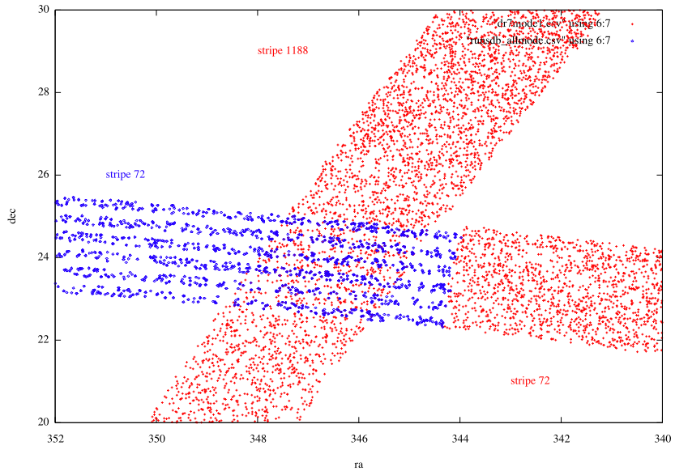
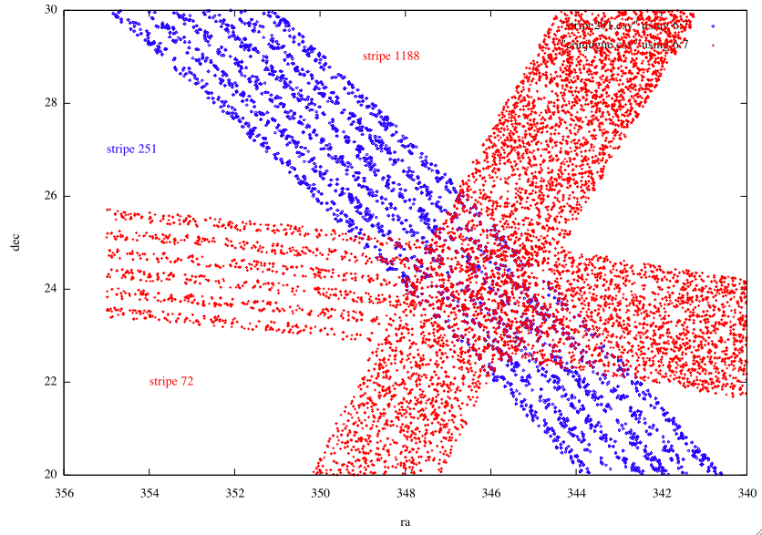

Select p.run,p.rerun,p.camcol,p.field,p.obj,p.ra,p.dec,g,mode,p.status,stripe,strip
From Photoobjall p,field f,segment s
Where
Ra between 352 and 340 and
Dec between 20 and 30 and
G between 18 and 18.2 and
p.fieldid = f.fieldid and f.segmentid = s.segmentid
(and mode=1 for the context dr7)
( $11== 72 && $4 > 268 )
The South strip of Stripe 72 from the runsdb consists of objects from run 4836.
Moreover, in the Runsdb database appears another stripe, the stripe 291. In the following picture, all the datas come from Runsdb.
